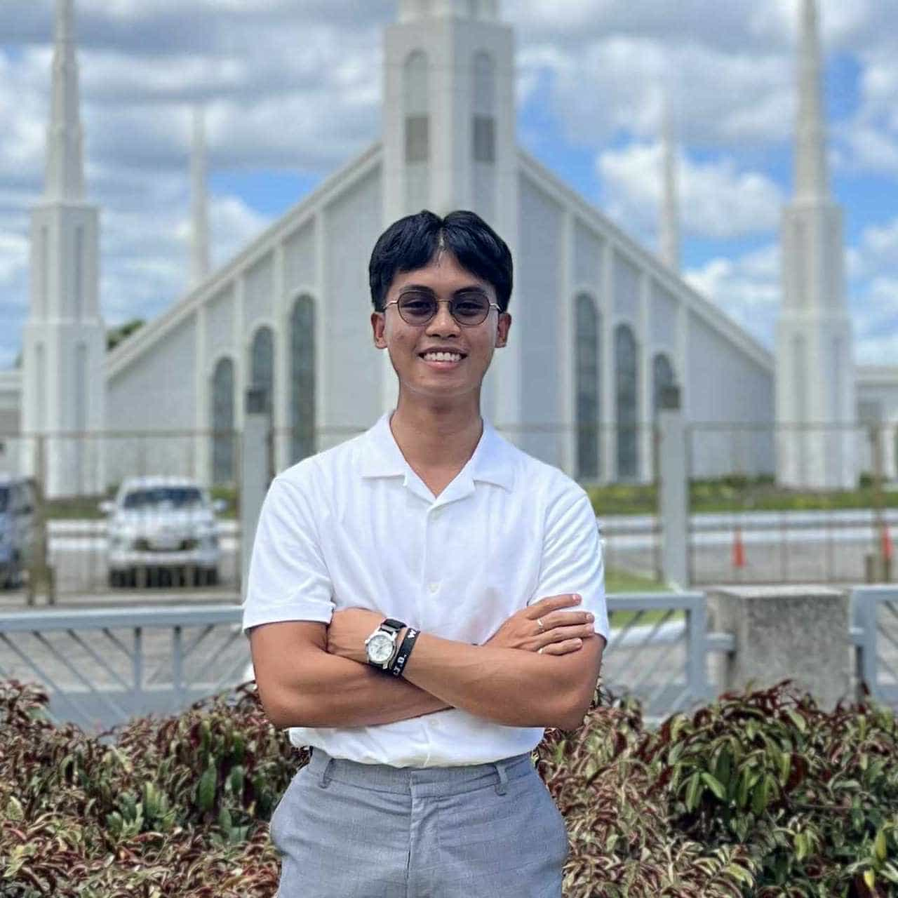

Karel Ignacio | WDD 130

Hello everyone! My name is Karel Ignacio, and I'm really excited to be here in this programming class. As a BYU-Idaho student, I'm eager to dive into the world of coding and explore how software is built. I have no prior programming experience, but I'm a quick learner and eager to start from scratch. I'm particularly looking forward to understanding the fundamentals of algorithms. I'm excited to learn alongside all of you and collaborate on this journey into programming! Beyond the classroom, I'm aiming to translate this theoretical knowledge into practical skills. I'm eager to explore various programming languages, contribute to open-source projects, and eventually develop my own applications. This website will serve as a personal log of my progress, a place to share my projects, and a platform where I can connect with fellow learners and seasoned developers. I'm excited about the endless possibilities that coding offers and look forward to sharing my growth with you all.
- Manila Temple
- Cebu Temple
- Salt-Lake Temple